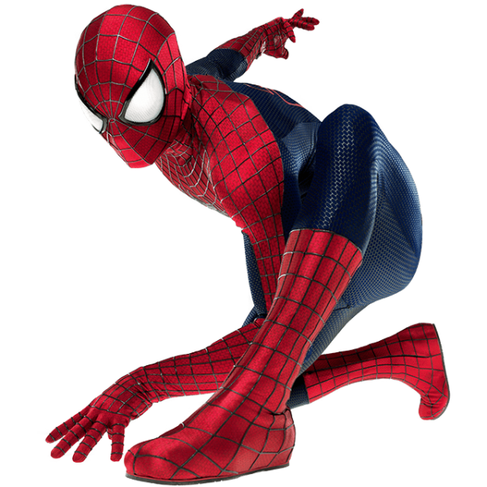

Peter Parker est le fils unique de Richard et Mary Parker. Ses parents sont tués en travaillant sous couverture pour le gouvernement. Peter, orphelin à l'âge de six ans, est alors confié à son oncle et à sa tante, Benjamin et May Parker.
Un jour, à la suite d'une expérience à laquelle il assiste, il est mordu par une araignée radioactive. Cette morsure lui confère des super-pouvoirs : une force et une agilité hors du commun, la capacité d’adhérer aux parois ainsi qu'un « sens d'araignée » l'avertissant des dangers imminents.

Dans un premier temps, Peter Parker va mettre à profit ses pouvoirs fraîchement acquis pour gagner de l'argent. Mais très vite, un drame va changer sa vie : il va laisser un voleur s'échapper alors qu'il aurait pu très facilement l'arrêter, prétextant que ce n'est pas son problème. Peu de temps après, son oncle est tué par un cambrioleur. Ivre de colère, il se lance à la poursuite de l'assassin qui, une fois arrêté, se révèle être le voleur qu'il n'avait pas daigné appréhender. À partir de cet instant, sa vocation sera de lutter contre le crime et de suivre l'adage de son défunt oncle : « Un grand pouvoir implique de grandes responsabilités. »
J. Jonah Jameson est l'archétype même de l'envieux : selon lui, tous les super-héros sont au mieux des profiteurs de gloire, au pire des malfaiteurs qu'il faut démasquer aux yeux du public. Spider-Man sera sa cible préférée ; dès l'instant où ce dernier a sauvé son fils John Jameson, il considère que c'est dans l'unique but de lui voler la vedette. Peter Parker, en adolescent mal dans sa peau, a bien du mal avec l'opinion publique, la police, ses petites amies Mary Jane Watson et Gwen Stacy, sa tante cardiaque et les criminels qu'il rencontrera, pour ne pas dévoiler son identité.